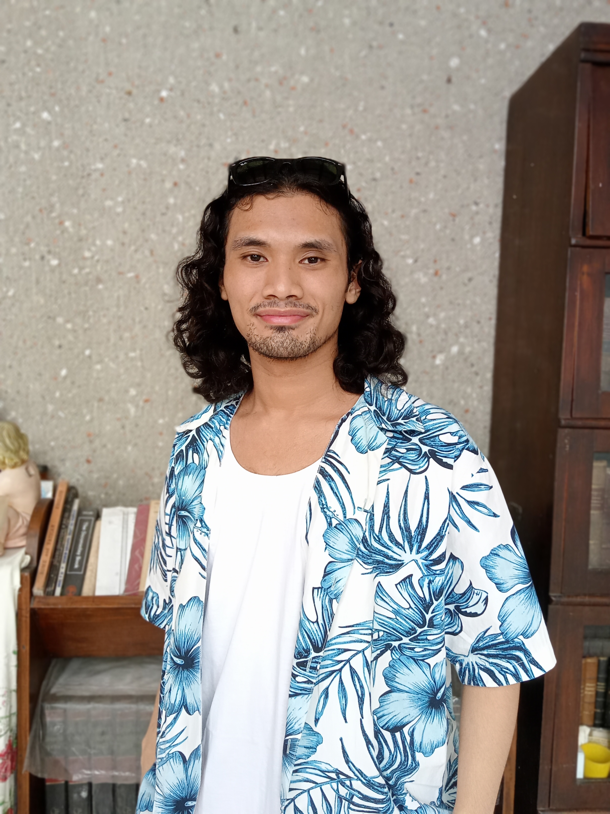

I'm Pierre Vincent C. Hernandez, a 2nd DLSU college student who
is currently taking BS Computer Science Major in Computer Systems Engineering.
I am seeking a career where I could utilize the current knowledge and skills that I have
in order to solver real-world problems that would benefit a lot of people.
I am always eager to learn a lot of new things in the vast world of computing in
order to continuously improve not only myself but also my craft.
- Education
-
De La Salle University (DLSU), Manila, PhilippinesOctober 2020 - Present
Major: Bachelor of Science in Computer Science Major in Computer Systems Engineering
- Experience
-
Project Head - Organizational
Application DevelopmentMarch 2022 - Present
- DLSU La Salle Computer Society (LSCS), Manila
- A termlong project where we create various websites and web applications
for the requesting committees within the organization.
Research Assistant - TITAN ProjectJanuary 2022 - Present
- DLSU Advanced Research Institute for Informatics, Computing and Networking (AdRIC), Manila
- A contractual work under Dr. Joel Ilao. I am responsible for manually counting objects detected in the
CCTV camera and provide datasets in order to further improve their project.
Project Head - Student Development GoalsJanuary 2022 - Present
- DLSU College of Computer Studies Batch 24 (CATCH2T24)
- A termlong project where we raise the awareness of fellow Lasallians regarding renewable
and non-renewable energy in support of the Sustainable Development Goals.
Associate Vice President - Research
and DevelopmentOctober 2021 - Present
- DLSU La Salle Computer Society (LSCS), Manila
- Helping in shaping future officers of the organization while also providing
research and development support for the organization.
Associate Vice President - FinanceOctober 2021 - Present
- DLSU Society of Proactive Role Models INspiring Total Development (SPRINT), Manila
- Helping in shaping future officers of the organization while also overseeing
the financial processes within the organization.
Executive - Research and DevelopmentOctober 2021 - Present
- DLSU College of Computer Studies Batch 24 (CATCH2T24)
- Providing research and development support for the batch government.
Undergraduate Intern - BioinformaticsOctober 2021 - Present
- DLSU Bioinformatics Group, Manila
- Helping in debugging the project code and creating a unit test for the research project.
Operations Lead - TTSOctober 2021 - Present
- Tatak Tech Solutions, Cavite
- Responsible for communicating with clients, and leading and overseeing projects.
ScriptwriterJuly 2021 - Present
- DLSU La Salle Dance Company - Folk, Manila
- Writing scripts for concerts and other events of the company.
- Skills
-
Soft skills
- Leadership
- Collaboration
- Project Management
- Communication
- Public Speaking
- Problem Solving
- Research
Computer and Programming skills
- Basic Microsoft Productivity Tools (Word, Excel, PowerPoint)
- C/C++
- Java
- Rust
- Go
- HTML, CSS
- Javascript
- Python
- Ruby
- MATLAB
- SQL, MySQL
- NoSQL, MongoDB
- Node.js
- Express.js
- Handlebars, EJS
- Git, GitHub, Bitbucket
- GNU Bash, WSL
- Hobbies and Interests
-
- Programming
- Listening to music
- Playing guitar
- Linux
- Digital Signal Processing
- Math and Science
- Philosophy
- Stocks
- References
-
Available on Request